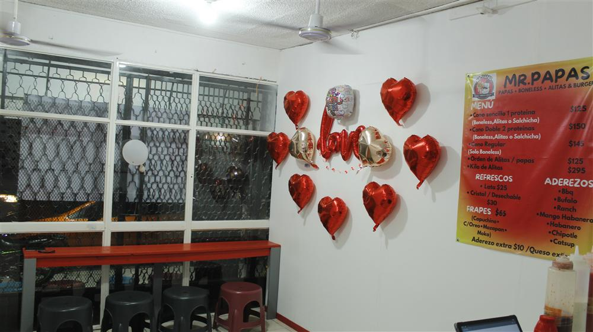

Ciudad Ixtepec no es solo un punto clave ferroviario en el Istmo de Tehuantepec; es también un caldero de sabores que fusionan la tradición con las nuevas tendencias gastronómicas urbanas.
Un Punto de Encuentro en el Istmo
Ya seas un viajero que acaba de bajar del tren o un habitante local buscando opciones frescas para la cena, Ixtepec ofrece una variedad que sorprende. Desde los mercados tradicionales por la mañana hasta la vibrante escena de comida rápida por la noche.
¿Qué buscar en un restaurante en Ixtepec?
Al buscar donde comer en Ixtepec, la clave es la frescura y el ambiente. La ciudad cobra vida después de las 6:00 PM, cuando el clima refresca y las familias salen a disfrutar del centro histórico. Es el momento ideal para buscar platillos que reconforten el alma.

La Nueva Ola de Sabor: Mr. Papas
En este panorama, Mr. Papas ha sabido ganarse un lugar especial. Situado a pasos de la Casa de la Cultura, nos enfocamos en ofrecer esa comida "confort" que todos buscan: alitas crujientes, hamburguesas jugosas y nuestras famosas papas preparadas.
Si tu búsqueda es por restaurantes en Ixtepec que combinen calidad americana con hospitalidad istmeña, te invitamos a conocernos. No solo servimos comida; servimos momentos de convivencia en el corazón de nuestra querida ciudad.